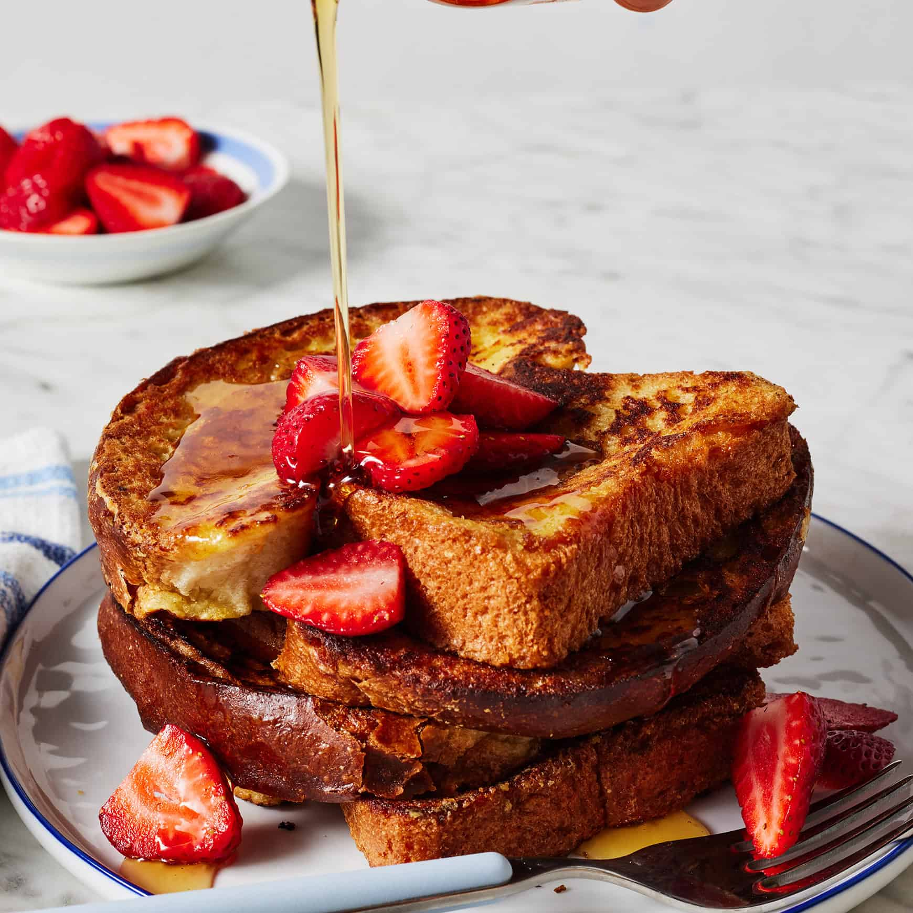

French Toast Recipe

Ingredients:
- 8 Slices Brioche Bread
- 1/2 Cup Milk
- 4 Eggs
- 1 TBSP Vanilla Extract
- 1 TBSP Sugar
- 1 TSP Cinnamon
- Butter or Cooking Oil
Directions:
- 1. In a mixing bowl, whisk together the eggs, milk, sugar, vanilla extract, and ground cinnamon until well combined. This creates the flavorful custard mixture for your French toast.
- 2. Heat a non-stick skillet or frying pan over medium-high heat. Add a small amount of butter or cooking oil to coat the bottom of the pan.
- 3. Dip one slice of bread into the egg mixture, making sure to coat both sides evenly. Allow any excess mixture to drip back into the bowl.
- 4. Place the coated bread slice onto the hot skillet. Cook for about 2-3 minutes on each side, or until it turns golden brown and slightly crispy.
- 5. Repeat the dipping and cooking process for the remaining slices of bread, adding more butter or oil to the pan as needed.
- 6. Remove the French toast slices from the skillet and place them on a plate.
- 7. Serve your delicious French toast warm, topped with your favorite toppings such as maple syrup, powdered sugar, fresh fruit, or a dollop of whipped cream.
Nutritional Info
Serving: 2slices, Calories: 404kcal, Carbohydrates: 38g, Protein: 15g, Fat: 21g, Saturated Fat: 11g, Polyunsaturated Fat: 1g, Monounsaturated Fat: 2g, Trans Fat: 0.02g, Cholesterol: 287mg, Sodium: 394mg, Potassium: 113mg, Fiber: 0.3g, Sugar: 5g, Vitamin A: 888IU, Vitamin C: 0.02mg, Calcium: 108mg, Iron: 2mg
return to library...